컴퓨터응용선반기능사 (2010-07-11 기출문제)
1과목: 기계재료 및 요소
1. 다음 중 가장 큰 하중이 걸리는데 사용되는 키(key)는?
- 새들 키
- 묻힘 키
- 둥근 키
- 평 키
(정답률: 56%)

2. 벨트 전동에 관한 설명으로 틀린 것은?
- 벨트풀리에 벨트를 감는 방식으로 크로스벨트 방식과 오픈벨트 방식이 있다.
- 오픈벨트 방식에서는 양 벨트 풀리가 반대 방향으로 회전한다.
- 벨트가 원동차에 들어가는 측을 인(긴)장측이라 한다.
- 벨트가 원동차로부터 풀려나오는 측을 이완측이라 한다.
(정답률: 67%)
3. 알루미늄과 양은의 차이점은?
- 알루미늄은 단일원소이고 양은은 구리-아연-니켈의 합금이다.
- 알루미늄은 단일원소이고 양은은 구리-주석-니켈의 합금이다.
- 알루미늄은 구리-아연-니켈의 합금이고 양은은 단일 원소이다.
- 알루미늄은 구리-주석-니켈의 합금이고 양은은 단일 원소이다.
(정답률: 51%)
4. 순간적으로 짧은 시간에 작용하는 하중은?
- 정 하중
- 교번 하중
- 충격 하중
- 분포 하중
(정답률: 84%)
5. 복식 블록 브레이크의 설명 중 틀린 것은?
- 큰 회전력의 제동에 적당하다.
- 브레이크 드럼을 양쪽에서 누른다.
- 축에 구부림이 작용하지 않는다.
- 축의 역전 방지 기구로 사용된다.
(정답률: 40%)
6. 모듈이 3이고, 잇수가 각각 30과 60인 한 쌍의 표준 평기어의 중심거리는?
- 114㎜
- 126㎜
- 135㎜
- 148㎜
(정답률: 70%)
7. TTT 곡선도에서 TTT가 의미하는 것 중 틀린 것은?
- 시간(Time)
- 뜨임(Tempering)
- 온도(Temperature)
- 변태(transformation)
(정답률: 50%)
8. 열경화성 수지에서 높은 전기 절연성이 있어 전기부품 재료를 많이 쓰고 있는 베크라이트(bakelite)라고 불리는 수지는?
- 요소 수지
- 페놀 수지
- 멜라민 수지
- 에폭시 수지
(정답률: 56%)
9. 탄소공구강의 구비조건이 아닌 것은?
- 내마모성이 클 것
- 내충격성이 우수할 것
- 열처리성이 양호할 것
- 상온 및 고온경도가 작을 것
(정답률: 78%)
10. 표면 경도를 필요로 하는 부분만을 급랭하여 경화시키고 내부는 본래의 연한 조직으로 남게 하는 주철은?
- 칠드 주철
- 가단 주철
- 구상흑연 주철
- 내열 주철
(정답률: 49%)
11. 철강재 스프링 재료가 갖추어야 할 조건이 아닌 것은?
- 가공하기 쉬운 재료이어야 한다.
- 높은 응력에 견딜 수 있고, 연구변형이 적어야 한다.
- 피로강도와 파괴인성치가 낮아야 한다.
- 부식에 강해야 한다.
(정답률: 78%)
12. 18-4-1형의 고속도강에서 18-4-1에 해당하는 원소로 맞는 것은?
- W-Cr-Co
- W-Ni-V
- W-Cr-V
- W-Si-Co
(정답률: 58%)
13. 레이디얼 볼 베어링의 안지름이 20㎜인 것은?
- 6204
- 6201
- 6200
- 6310
(정답률: 81%)
14. 재료의 인장시험에서 시험편의 표점 거리가 50㎜이고, 인장시험후 파괴 직전의 표점 거리가 55㎜이었을 때 재료의 연신율은 몇 % 인가?
- 5
- 10
- 50
- 55
(정답률: 63%)
15. 구리(Cu)에 관한 내용으로 틀린 것은?
- 비중이 1.7이다.
- 용융점이 1083℃ 정도이다.
- 비자성으로 내식성이 철강보다 우수하다.
- 전기 및 열의 양도체이다.
(정답률: 66%)
2과목: 기계제도(절삭부분)
16. 그림과 같은 기계가공 도면에서 대각선 방향으로 가는 실선으로 교차하여 표시된 X 부분의 설명으로 맞는 것은?
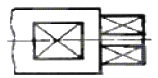
- 현장 끼워 맞춤 표시한 곳
- 정밀하게 가공해야 할 곳
- 평면으로 가공해야 할 곳
- 사각구멍을 뚫어야 할 곳
(정답률: 77%)
17. KS 기계제도에서 치수 배치에 한 개의 연속된 치수선으로 간편하게 표시하는 것으로 치수의 기점의 위치는 기점 기호(○)로 나타내는 치수 기입법은?
- 직렬치수 기입법
- 좌표치수 기입법
- 병렬치수 기입법
- 누진치수 기입법
(정답률: 42%)
18. 재료기호가 "GC 200"으로 표시된 경우 재료명은?
- 탄소공구강
- 고속도강
- 회주철
- 알루미늄 합금
(정답률: 60%)
19. 그림과 같은 축과 구멍의 끼워 맞춤에서 최대 틈새가 0.1㎜, 최대 죔새가 0.1㎜일 때 축의 치수는?
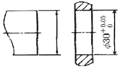
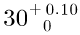
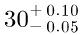
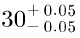
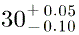
(정답률: 40%)
20. 3각법으로 투상한 그림의 도면에 적합한 입체도의 형상은?
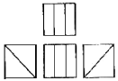
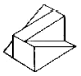
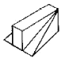
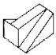
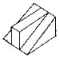
(정답률: 77%)
21. 그림과 같이 키 홈, 구멍 등 해당부분 모양을 도시하는 것으로 충부한 경우 사용하는 투상도로 투상 관계를 나타내기 위하여 주된 그림에 중심선, 기준선, 치수 보조선 등을 연결하여 나타내는 투상도는?
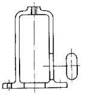
- 가상 투상도
- 요점 투상도
- 회전 투상도
- 국부 투상도
(정답률: 79%)
22. 부품의 면 일부분에 열처리를 할 때에 사용되는 선의 종류로 옳은 것은?
- 가는 2점 쇄선
- 굵은 2점 쇄선
- 굵은 1점 쇄선
- 가는 1점 쇄선
(정답률: 55%)
23. 가공에 의한 컷의 줄무늬가 여러 방향으로 교차 또는 무방향으로 나타나는 가공 모양의 기호는?
- C
- M
- R
- X
(정답률: 63%)
24. 나사의 표시를 "M12"로만 표기되었을 경우 설명으로 틀린 것은?
- 오른나사인데 표시하지 않고 생략되었다.
- 두줄나사인데 표시하지 않고 생략되었다.
- 미터 보통나사이고 피치는 생략되었다.
- 나사의 등급이 생략되었다.
(정답률: 55%)
25. 다음과 같이 표시된 기하공차의 올바른 해독은?
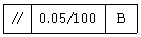
- 기준 B의 100㎜에 대한 평면도 허용값이 지정길이 100㎜에 대하여 0.⑤㎜의 허용값을 나타낸다.
- 평행도가 기준 B에 대하여 지정길이 100㎜에 대하여 0.⑤㎜의 허용값을 나타낸다.
- 직각도가 기준 B에 대하여 지정길이 100㎜에 대하여 0.⑤㎜의 허용값을 나타낸다.
- 원통도가 기준 B에 대하여 지정길이 100㎜에 대하여 0.⑤㎜의 허용값을 나타낸다.
(정답률: 75%)
26. 절삭면적을 나타낼 때 절삭깊이와 이송량과의 관계는?
- 절삭면적 = 이송량 / 절삭깊이
- 절삭면적 = 절삭깊이 / 이송량
- 절삭면적 = 이송량 × 절삭깊이 / 2
- 절삭면적 = 절삭깊이 × 이송량
(정답률: 60%)
27. 밀링 머신에서 둥근 단면의 공작물을 사각, 육각 등으로 가공할 때 사용하면 편리하며, 변환기어를 테이블과 연결하여 비틀림 홈 가공에 사용하는 부품은?
- 밀링 바이스
- 슬로팅 장치
- 회전 테이블
- 분할대
(정답률: 28%)
28. 외경 연삭기에 대한 일반적인 설명으로 틀린 것은?
- 외경연삭기는 원통의 바깥지름을 연삭하는 연삭기이다.
- 외경연삭기의 구조는 선반(lathe)과 유사하다.
- 일반적으로 가공물을 양 센터로 지지한다.
- 테이블을 전후로, 숫돌대로 좌우로 이송한다.
(정답률: 44%)
29. 공작기계를 가공방법에 따라 분류할 때, 연삭 숫돌이나 숫돌 입자 등의 연삭 작용으로 공작물을 가공하는 연삭 가공 기계는?
- 전해 연마기
- 방전 가공기
- 쇼트 피닝 머신
- 슈퍼 피니싱 머신
(정답률: 63%)
30. 연삭이 진행됨에 따라 둔하게 된 입자가 새로운 입자로 바뀌는 숫돌바퀴의 특징을 무엇이라 하는가?
- 드레싱
- 트루잉
- 글레이징
- 자생 작용
(정답률: 46%)
3과목: 기계공작법
31. 다음 절삭 공구 중 밀링 커터와 같은 회전 공구로 래크를 나선 모양으로 감고, 스파이럴에 직각이 되도록 축 방향으로 여러 개의 홈을 파서 절삭날을 형성하는 것은?
- 호브
- 래크
- 피니언 커터
- 총형 커터
(정답률: 32%)
32. 선반 가공에서 심압대의 테이퍼 구멍 안에 부속품을 설치하여 가공이 가능한 것은?
- 드릴 가공
- T홈 가공
- 외경 가공
- 데브테일 가공
(정답률: 60%)
33. 레이저 가공은 가공물에 레이저 빛을 쏘이면 순간적으로 밑부분이 가열되어, 용해되거나 증발되는 원리이다 가공에 사용되는 레이저 종류가 아닌 것은?
- 기체 레이저
- 반도체 레이저
- 고체 레이저
- 지그 레이저
(정답률: 52%)
34. 직선이어야 할 기계 부분 또는 운동이 이상적인 직선(기하학적 직선)으로부터 벗어난 정도의 크기를 알아 보는 것은 무슨 측정에 해당하는가?
- 평면도 측정
- 진직도 측정
- 진원도 측정
- 원통도 측정
(정답률: 65%)
35. 다음 중 절삭유제가 갖추어야 할 조건이 아닌 것은?
- 마찰계수가 높을 것
- 표면장력이 작을 것
- 냉각성이 우수할 것
- 유막의 내압력이 높을 것
(정답률: 55%)
36. 선반가공에서 공작물의 길이가 길어서 이동 방진구를 사용하였다. 어느 부분에 설치하는가?
- 심압대
- 에이프런
- 왕복대의 새들
- 베드
(정답률: 48%)
37. 비교 측정에 사용되는 측정기기는?
- 투영기
- 마이크로미터
- 다이얼 게이지
- 버니어 켈리퍼스
(정답률: 66%)
38. 수평 밀링머신의 플레인 커터 작업에서 상향 절삭과 비교한 하향 절삭의 장점이 아닌 것은?(오류 신고가 접수된 문제입니다. 반드시 정답과 해설을 확인하시기 바랍니다.)
- 날의 마멸이 적고 수명이 길다.
- 일감의 고정이 간편하다.
- 절삭된 칩의 절삭열에 의한 치수정밀도의 변화가 적다.
- 가공면이 깨끗하다.
(정답률: 53%)
39. 드릴로 뚫은 구멍의 내면을 매끈하고 정밀하게 하는 가공은?
- 슈퍼 드릴링
- 래핑
- 숏 피닝
- 리밍
(정답률: 62%)
40. 세라믹 절삭공구의 일반적인 설명으로 틀린 것은?
- 주성분은 산화알루미늄(Al2O3)이다.
- 충격에 매우 강하다.
- 고속 다듬질에서 우수한 성능을 나타낸다.
- 고온에서 경도가 높다.
(정답률: 62%)
4과목: CNC공작법 및 안전관리
41. 1날 당 이송량 0.12㎜, 밀링 커터의 날수 12개, 회전수가 800rpm일 때 이송속도는 몇 ㎜/min인가?
- 1⑤0
- 1100
- 1152
- 1200
(정답률: 62%)
42. 다음 그림과 같은 형태의 유동형 칩에 대한 설명으로 틀린 것은?
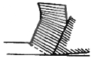
- 가공면이 깨끗하고 절삭력의 변동도 적다.
- 점성이 큰 재질을 작은 경사각의 공구로 절삭할 때 발생 한다.
- 절삭 깊이를 작게 하고 높은 절삭 속도에서 절삭유제를 사용하여 가공할 때 발생한다.
- 칩이 공구의 뒷면을 원활하게 연속적을 흘러 나간다.
(정답률: 60%)
43. CNC 선반 프로그램에서 "G96 S250 M03 ;"을 실행하여 공작물 직경 ø46 부분을 가공할 때 주축의 회전수는 약 몇 rpm인가?
- 58
- 250
- 1730
- 2500
(정답률: 49%)
44. CAD/CAM 시스템의 입력장치가 아닌 것은?
- 조이스틱(Joy stick)
- 라이트 펜(Light Pen)
- 트랙 볼(Track Ball)
- 하드 카피 기기(Hard Copy Unit)
(정답률: 57%)
45. 다음 CNC 선반 프로그램의 복합형 고정 사이클의 지령워드에 대한 설명으로 틀린 것은?
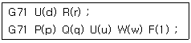
- U(d) : 1회 절삭 깊이(반경 지령 값)
- R(r) : 도피량(X축 후퇴량)
- U(u) : X축 다음질 여유
- Q(q) : Z축 다음질 여유
(정답률: 40%)
46. 선반작업에서 측정 및 공구 사용시 안전사항으로 틀린 것은?
- 측정을 할 때는 반드시 기계를 정지한다.
- 척 핸들을 사용한 후 반드시 제거한다.
- 바이트는 가능한 짧고 단단하게 고정한다.
- 절삭 칩은 반드시 손으로 제거한다.
(정답률: 86%)
47. 머시닝센터 고정 사이클에서 태핑 사이클로 적당한 G기능은?
- G81
- G82
- G83
- G84
(정답률: 36%)
48. 다음 그림의 A → B → C 이동지령 머시닝센터 프로그램에서 (ㄱ), (ㄴ)에 들어갈 내용으로 맞는 것은?
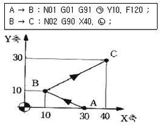
- (ㄱ) X-20. (ㄴ) Y30.
- (ㄱ) X20. (ㄴ) Y20.
- (ㄱ) X20. (ㄴ)Y30.
- (ㄱ) X-20. (ㄴ)Y20.
(정답률: 50%)
49. 머시닝센터의 기계 일상 점검 중 매일 점검 사항이 아닌 것은?
- 각부의 작동 검사
- 유량 점검
- 압력 점검
- 기계정도 검사
(정답률: 67%)
50. CNC 공작기계의 좌표계 중에서 기계좌표계에 대한 설명으로 가장 알맞은 것은?
- 기계의 기준점으로 기계 제작자가 파라미터에 의해 정한다.
- 도면을 보고 프로그램을 작성할 때 기준이 되는 점이다.
- 일감측정, 정확한 거리이동, 공구보정 등에 사용된다.
- 현 위치가 좌표계의 기준이 되고 필요에 따라 위치를 0으로 지정한다.
(정답률: 47%)
51. 다음 중 CNC의 서버기구 제어방식이 아닌 것은?
- 위치결정 제어
- 디지털 제어
- 직선절삭 제어
- 윤곽절삭 제어
(정답률: 67%)
52. 절삭 공구의 날끝 선단을 프로그램 원점에 맞추어 공작물 좌표계를 설정하였다. 옳은 것은?
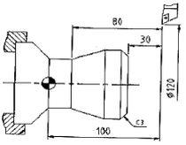
- G50 U60. W100
- G50 U60. W-100 ;
- G50 X120. Z100. ;
- G50 X120. Z-100 ;
(정답률: 50%)
53. 다음과 같이 지령된 CNC 선반 프로그램이 있다. N02 블록에서 F0.3의 의미는?
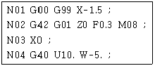
- 0.3m/min
- 0.3 ㎜/rev
- 30 ㎜/min
- 300 ㎜/rev
(정답률: 46%)
54. 다음은 선반용 인서트 팁의 ISO 표시법이다. M의 의미는 무엇인가?
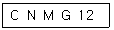
- 인서트 공차
- 인서트 단면 형상
- 공차
- 여유각
(정답률: 39%)
55. CNC 선반에서 지령값 X70.0으로 소재를 가공한 후 측정값이 ø69.95 이었다. 기존의 X축 보정값이 1.235이었다면 보정값을 얼마로 수정해야 하는가?
- 0.⑤
- 1.238
- 1.235
- 1.285
(정답률: 61%)
56. 그림의 (A), (B), (C)에 해당하는 공작기계로 적당한 것은?
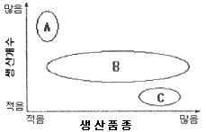
- (A) : 범용기계, (B) : 전용기계, (C) : CNC 공작기계
- (A) : 범용기계, (B) : CNC 공작기계, (C) : 전용기계
- (A) : 전용기계, (B) : 범용기계, (C) : CNC 공작기계
- (A) : 전용기계, (B) : CNC 공작기계, (C) : 범용기계
(정답률: 50%)
57. 다음의 공구 보정화면 설명으로 옳은 것은?
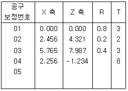
- 공구 보정번호 01번에서의 Z축 보정은 4.321이다.
- 공구 보정번호 02번에서의 X축 보정은 0.2 이다.
- T는 가상인선 번호로서 공구번호와 반드시 일치하도록하여 사용한다.
- R은 공구의 날끝 반경으로 공구 인선반경 보정에 사용한다.
(정답률: 50%)
58. 다음은 머시닝센터 가공 도면을 나타낸 것이다. B에서 C로 진행하는 프로그램으로 올바른 것은?
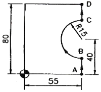
- G02 X55. Y55. R15. ;
- G03 X55. Y55. R15. ;
- G02 X55. Y55. I-15. ;
- G03 X55. Y55. J-15. ;
(정답률: 51%)
59. CNC 선반에서다음과 같은 복합형 나사가공 사이클에 대한 설명으로 틀린 것은?
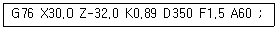
- 나사의 시작점 좌표는 X30.0 Z-32.0이다.
- 나사산의 높이는 0.89이다.
- 나사의 리드는 1.5이다.
- 나사산의 각도는 60도이다.
(정답률: 32%)
60. 머시닝센터 작업시 안전 및 유의 사항으로 틀린 것은?
- 작업시 장갑을 끼지 않는다.
- 일감을 정확하게 고정하고 확인한다.
- 가공도중에 제품의 치수를 측정한다.
- 프로그램은 충분히 확인한 후 이상이 없을시 가공을 시작한다.
(정답률: 85%)